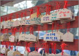
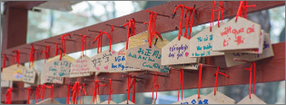
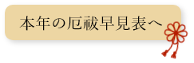

北関神社
当神社について
豊玉姫をお祀りしております。 豊玉姫は、浦島太郎に登場する「乙姫」のモデルとなった神様といわれ、 初代天皇「神武天皇」の祖母にあたります。 豊玉姫は縁結びの神様として有名ですが、家内安全・商売繁盛・ 航海安全の守り神でもあります。
-
祭典と行事
1月1日の歳旦祭に始まり、12月1日の大赦式、 除夜祭に至るまで、移ろいゆく季節とともに さまざまな祭典を執り行っております。
 
-
ご参拝・ご祈祷
家内安全、商売繁盛、安産祈願、七五三詣、厄年祓、 神前結婚式などの人生儀礼のご祈祷のほか、 地鎮祭・神棚清祓・開店清祓など現地へ出向いての祭儀も ご奉仕申し上げております。
 -
参拝時間
- 1月2日～3日まで 午前6時半より閉門まで
- 1月4日から7日まで 午前7時より閉門まで
- 通常日 午前9時より閉門まで
- 閉門 4月～10月 午後5時 11月～3月 午後4時
-
お知らせ
2022.11.1駐車場が広くご利用頂けるようになりました。2022.10.1「北国のしあわせ鈴」の販売についてよくある質問
こちらから質問箱をご覧ください。

-
アクセス
地下鉄南北線 中島公園駅 徒歩3分
駐車場10台
→ 駐車場のご案内